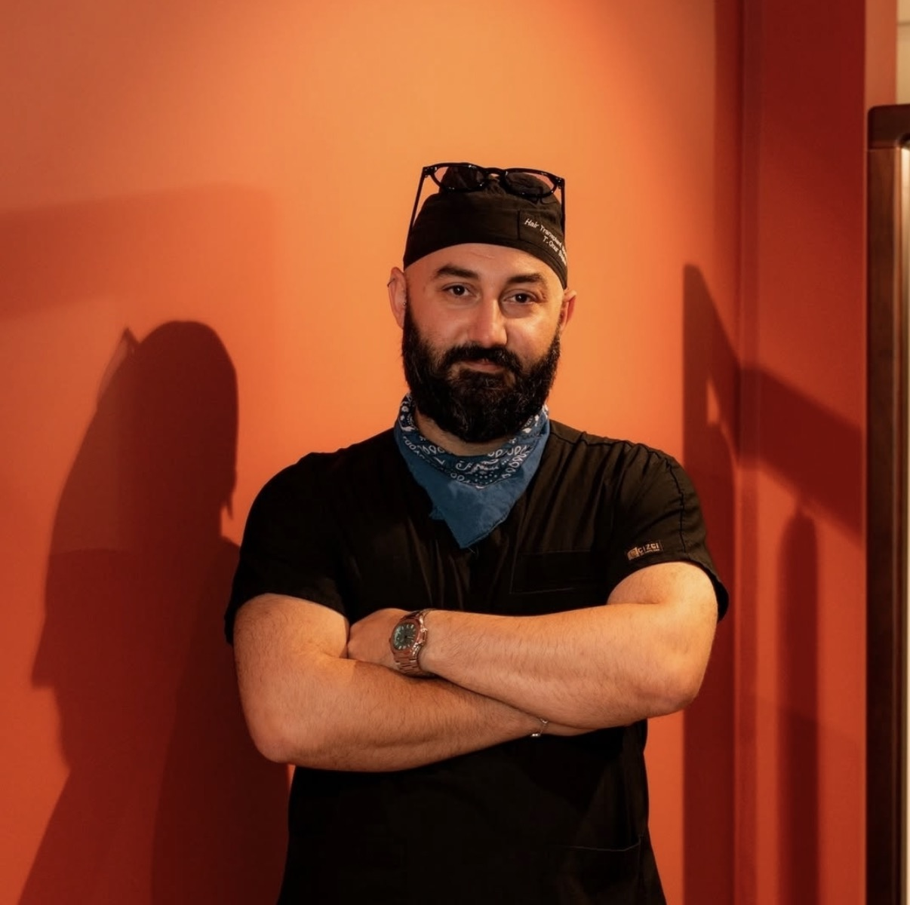
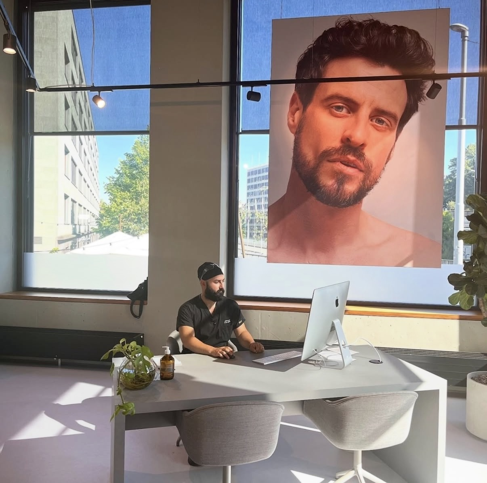
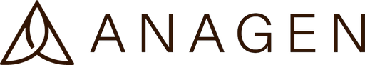
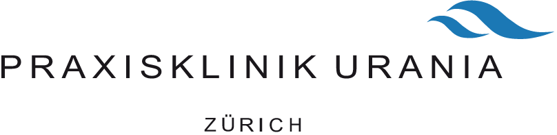

Hair Transplant
FUE hair transplantation for receding hairlines and thinning areas, planned for density and a natural hairline.
- FUE
- Hairline design
- Crown
I’m Taha, a hair transplant specialist with 8 years of experience and a background in anaesthesia. I combine precise FUE technique with calm, personal care, from your first consultation to your final check.


01About
I have worked in healthcare since 2011. I began my career as an anaesthesia technician in hospitals in Istanbul, Ankara and Samsun, where I also led a team of anaesthesia technicians.
For the past 8 years I have focused on hair transplantation, working with clinics in Switzerland, Sweden and Turkey and on assignments across Europe and North Africa. Today I work with Anagen Clinic in Zurich, Geneva and Basel.
“A good result starts long before the procedure, with listening, honest advice and a patient who feels at ease.”
Years in anaesthesia taught me that patient safety and comfort are never negotiable.
Every graft is handled with care, with angle and density planned for a natural result.
I take time to listen, explain every step and stay with you through aftercare.
02Treatments
Three treatments, one approach: natural results, carried out with the attending physician to the highest standard.
FUE hair transplantation for receding hairlines and thinning areas, planned for density and a natural hairline.
Filling patchy areas or creating a fuller beard, with grafts placed in the natural growth direction.
Restoring shape and fullness, placed hair by hair for a soft, natural look.
Skills
Careful removal from the donor area to protect graft quality.
Recipient channels at the right angle and density.
Each graft placed following the natural direction of growth.
Honest advice on options, expectations and planning.
Treatment reports, follow-up checks and recovery advice.
Experience leading procedure teams in several countries.
03Work story
From the first line drawn on the forehead to the first new hairs. Real moments from real procedures in Switzerland.
Patient identities protected.
04How I work
We talk about your goals, assess the donor area and discuss what is realistic.
Together with the physician we plan the design, graft count and density.
Extraction, channel opening and implantation, with your comfort in mind throughout.
Clear aftercare guidance and follow-up checks as the new hair grows.
05Aftercare
New hair does not appear overnight. The full result takes about a year, and the crown can need up to 18 months. Knowing what is normal makes the wait much calmer.
Day 0
The grafts are placed under local anaesthesia. You go home the same day with a clear aftercare plan.
Days 1–3
The area is checked and you are shown how to wash. Until then: hands off, and sleep with your head raised.
Days 10–14
Gentle daily washing softens the small scabs until they come away on their own.
Weeks 2–8
Many of the transplanted hairs fall out. This is expected: the roots stay in place and rest before growing again.
Months 3–6
Fine new hairs appear and slowly get stronger. By month six the change is usually clearly visible.
Months 12–18
Density and texture mature. The crown often takes a little longer than the front.
A scab pulled off too early can take the graft with it.
Keep your head raised to reduce swelling.
Both slow down healing and blood flow to the scalp.
Sweat and strain irritate the healing skin. Light walks are fine.
Chlorine, salt water and heat irritate the scalp.
After that, protect the scalp with a loose hat for a few months.
General guidance only. Every clinic has its own protocol, so your clinic’s written instructions always come first.
06Knowledge
Short answers to the questions I hear most often, based on information from medical societies and health services.
Hair grows in small natural groups of one to four hairs, called follicular units. During a transplant these units are taken from the donor area at the back and sides of the head and placed one by one into tiny openings in the thinning area.
The procedure is done under local anaesthesia and you usually go home the same day. Transplanted hair keeps its original properties and continues to grow.
With FUE, single follicular units are removed with a tiny round punch. It leaves small dot-like scars that are easy to hide, even with short hair.
With FUT, a thin strip of skin is removed and divided into grafts under a microscope. This leaves one fine line-shaped scar. Names such as DHI or Sapphire FUE refer to particular instruments for opening the channels or placing the grafts.
Not all hair loss is permanent. Illness, stress, weight loss or iron deficiency can cause temporary thinning, so it is wise to see a doctor about the cause first.
A transplant moves your own hair; it does not create new hair. The density of your donor area therefore sets the limit for what can be achieved, today and in a possible later session.
The size of the area, how much hair is still there, hair thickness, curl and the contrast between hair and skin colour all play a role. Thick or wavy hair covers more with fewer grafts.
Because donor hair is limited, grafts are placed where they make the most visible difference, usually the hairline and the front first.
For a fuller beard, hairs are usually taken from the back of the scalp, or sometimes from under the chin. Each graft follows the natural direction of beard growth.
Eyebrow hairs are placed one by one, very flat to the skin. Hair taken from the scalp keeps growing like scalp hair, so transplanted eyebrows need regular trimming.
Most of the change becomes visible between month six and month twelve; the crown can take longer. Hair that was not transplanted may keep thinning over the years, and some people later choose a second session.
A doctor can advise you on ways to protect the hair you still have.
General information only. It does not replace a personal consultation with a doctor.
07Free analysis
Send me a few photos of your hair and I will reply personally by email with a first assessment: what is possible, which approach makes sense and what to expect.
This is a first, non-binding assessment and not a medical diagnosis. The final plan is always made together with a physician at the clinic.
08Experience
Eight years in hair transplantation across Switzerland, Sweden and Turkey, built on a solid foundation in anaesthesia.
Education
09Where I work
Seven countries have shaped how I work: flexible, calm and always patient-centred.
10References

Working with Anagen Clinic since 2024 in Zurich, Geneva and Basel.

We can fully recommend Mr. Baskol without reservation.
Mr. Başkol has demonstrated professionalism, precision, and dedication in his role.
His pleasant demeanor and exemplary professionalism earned him respect and appreciation from both colleagues and patients.
Even under high stress, Taha Başkol kept a cool head and acted calmly.
Quotes from official work certificates. Full certificates available on request.
11Contact
Whether you are a patient with questions or a clinic looking for an experienced specialist, I’m happy to hear from you.
onurbaskol@gmail.com